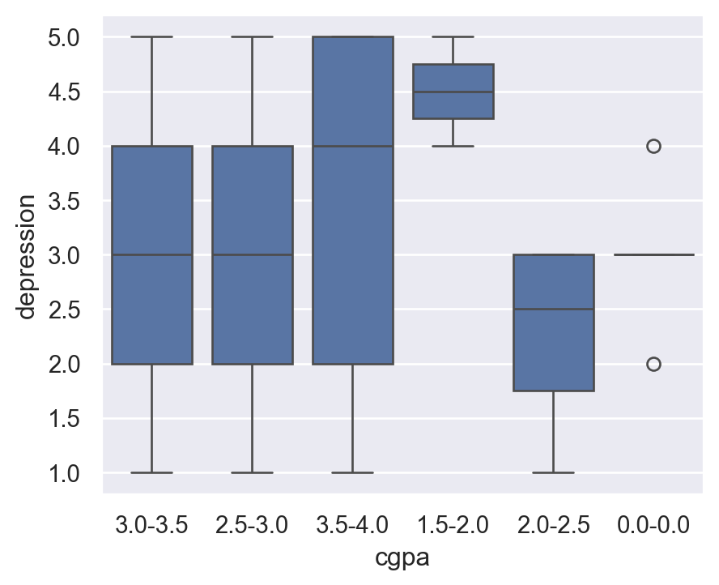
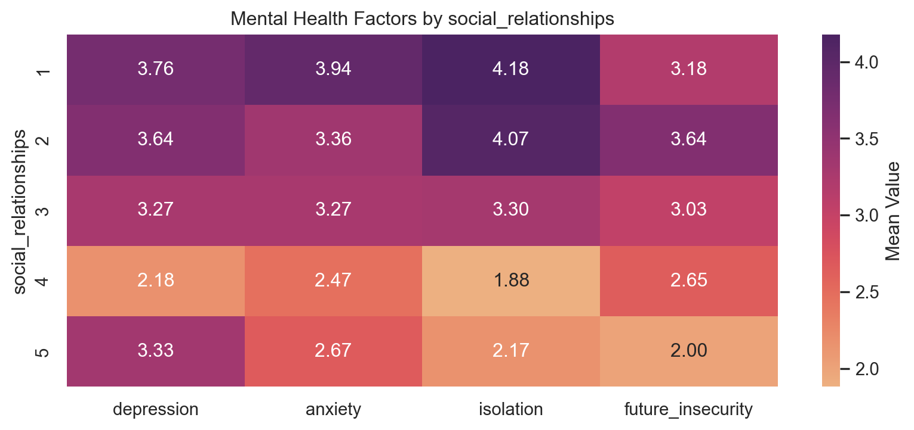

Student mental health has become a growing concern in higher education, with recent surveys indicating unprecedented levels of psychological distress. For example, a nationwide study of 33,000 college students found that half of students screened positive for depression and/or anxiety in late 2020 (Depression, Anxiety, Loneliness Are Peaking in College Students | The Brink | Boston University). These mental health difficulties can severely hinder students’ lives – reducing their quality of life, academic achievement, physical health, and satisfaction with the college experience (Consequences of Student Mental Health Issues – Suicide Prevention Resource Center). Given these stakes, it is crucial to understand how external pressures contribute to student mental health outcomes. College life often confronts students with multiple stressors, among which academic pressure, financial concerns, and social relationships are thought to play major roles. Academic stress is frequently cited as the dominant source of stress for students (Frontiers | Academic Stress and Mental Well-Being in College Students: Correlations, Affected Groups, and COVID-19), financial strain has been linked to higher risk of depression and anxiety, and social isolation or poor support networks can dramatically increase psychological distress (New Data Emphasizes the Correlation Between Loneliness and Student Mental Health - Active Minds). This study aims to examine how these three factors impact symptoms of depression, anxiety, and isolation in students. By quantifying their effects and interactions, we can better understand the nuances of student mental health and inform interventions to improve well-being and academic success.
The idea behind this project was to pay special attention to the mental health of students. Specifically, the tool hopes to identify students who may be higher risk in an attempt to make it easier for doctors to identify students at a higher risk. While this tool is not specifically designed to diagnose students with mental health disorders, it may aid doctors in diagnosing students. Ultimately this project is a tool, not a magic diagnosing device. The way that this project hoped to achieve success was to mimic the wellness survey at the start of most regular checkup visits and use this data to predict if students were at risk for mental health disorders. Specifically, I hoped to analyze how different external pressures affect different mental health disorders. For example, the survey asked about academic pressure, academic workload, financial strain, social relationships, etc, and I hoped to use this in order to not only predict risks of mental health disorders but also to identify correlations between certain pressures and mental health disorders.
In my initial planing stages of this tool was to figure out a way to standardize the user input (for example, a level 1 academic workload would be less than 3 hours of work a week outside of class). Ultimately I ended up scraping the idea because the tool is meant to act as a guage for how students feel and to better understand their perspective not to objectify their situation. For example, 2 students could be in the same classes, have the same amount of workload but student A finds it more stressful than student B. The survey would most likely reflect this by student A indicating a higher academic workload than studet B. As such, standradizing the survey would actually make thse two students appear the same when in reality it should attempt to identify student A as higher risk because they feel more stressed from courses. As such, the focus should be on measuring the percieved pressure and predicting the risk of mental health disorders.
Methodology
The primary methodology for this tool is to act as a predictor for mental health disorders. As such, the tool will take user input and predict the risk of depression, anxiety, and isolation in students. This tool will use a linear regression model to predict the risk of mental health disorders. Specifically, the tool will use multiple linear regressions to evaluate each of the mental health concerns in the survey (Depression, Anxiety, Isolation, Future Insecurity). The tool only used certain columns from the survey. The columns used were:
CGPA
Residential Status
Campus Discrimination
Sports Engagement
Average Sleep
Study Satisfaction
Academic Workload
Academic Pressure
Financial Concerns
Social Relationships
And the dependent variables were:
Depression
Anxiety
Isolation
Future Insecurity
The tool uses a random forest model to evaluate the risk of mental health disorders. This model uses the same columns as the linear regression model. The tool uses the linear regression models to generate a risk score for each mental health concern. To further evaluate the risk of mental health disorders, the tool uses the random forest model to identify important variables in the survey. Additionally, by analyzing the weights of each variable in the regression models, exploratory can be done to understand how different external pressures affect different mental health disorders. Additionally, there was some exploratory data analysis done to better understand the survey data distribution and correlations between variables.
Data
Libraries and Tools
As most things data science in python, this project uses pandas, numpy, sklearn, and seaborn. Pandas and numpy are different ways to better interact with csv’s and math operations. Sklearn is used for the regressions and models covered in the later sections. Seaborn is a highly adaptable graph maker for python.
Code
import pandas as pd import numpy as np import seaborn as sns import matplotlib.pyplot as pltfrom sklearn.model_selection import train_test_split from sklearn.linear_model import LinearRegression from sklearn.metrics import mean_squared_error, mean_absolute_error, r2_scorefrom sklearn import preprocessing from sklearn.ensemble import RandomForestRegressor
While not all of the columns were used in the tool itself, some of the columns were used in some exploratory data analysis for the survey data.
Data Cleaning
The bulk of the data cleaning came from converting the data into a format that could be used in linear regression. This involved converting categorical data to numerical data, removing unnecessary columns, and removing rows with missing values.
Examples would be changing Male or Female to 1 or -1, reformatting tables to make them easier to read, and removing rows with missing values.
There were other things I did to clean the data which is dropping certain columns that were less relevant to my use case such as the University column. This is because the data itself only has roughly 90 entries and there is not enough of a variety of universities to draw any meaningful conclusions.
The regression tools used for this project were from the python library “sklearn” and the tool used 4 different linear regressions (one for eaach mental health concern). Specifically these were: Depression, Anxiety, Isolation, and Future Insecurity. On top of the linear regression, the tool also used random forest regression to identify important variables in the survey.
For this section I will mainly focus on heatmaps and box plots to analyze correlations between specific variables and mental health issues. The dependent variable for these plots are the various mental health concerns measured in the survey (Depression, Anxiety, Isolation, Future Insecurity). Whereas there are a variety of independent variables that will be measured. Quick remind on how box plots work is that they plot the mean and their quartiles. The heatmaps display the mean of each coupled variable (example: average isolation score of women) and display the mean along a gradient. A darker color indicates a higher mean of mental score, whereas a lighter color indicates a lower score.
Code
def get_box_plot(i): sns.set_theme(style="darkgrid")for m in y: plt.figure(figsize=(5,4)) sns.boxplot(x=dfall[i], y=m) plt.show()def get_heatmap(m): pivot = (dfall.groupby(m)[y_names].mean()) plt.figure(figsize=(10, 4)) sns.heatmap(pivot, annot=True, cmap="flare", fmt=".2f", cbar_kws={'label': 'Mean Value'}) plt.title('Mental Health Factors by '+ m) plt.ylabel(m) plt.show()
Formatting
This project was formatted using quarto which essentially is a more adaptable and advanced form of jupyter notebooks. As shown in this document, it allows for a well formated document containing various code blocks, html formatting options, and markdown compatability. For data science needs Quarto is almost a one stop shop for its wide use cases and adaptability. Additionally its compatable with a variety of IDEs such as VSCode, Neovim, and RStudio. I encourage anyone interested in data science endeavors to check out Quarto because it is quite powerful.
Results
Tool
The actual implementation of the tool is quite simple. The code simply iterates through the different independent variables for the linear regression. At each iteration it asks the user for their score for each field. After it has collected the scores, the tool uses the collected user scores and the different linear regressions to determine the user’s risk score.
```{python}#| output: falsex_names = x.columnsuser_input = []for name in x_names: user_input.append(int(input("Input for " + name + ":\n")))user_input = np.array(user_input)for i in range(len(y_names)): print("Predicted risk of " + y_names[i] +": ") print(models[i].predict(user_input.reshape(1,-1)))```
TODO:
Add tool results
Add tool screenshots
Export weights
Exploratory Data Analysis
Here we can analyze a set of selected plots and draw conclusions based on the suvery data. Note that the code for these graphs are more clearly labeled in the plots section. Each plot was simply created by calling the get_box_plot or get_heatmap functions with the appropriate column name as an argument.
According to the above heatmap, females tended to report higher levels of mental health concerns than men. However, the data only inclduded roughly 20 females and 70 males so I attributed these differences to small sample size of the original dataset.
CGPA
According to the box plots, the students who reported the highest levels of mental health concern were students with GPA’s between 1.5 and 2.0. However, students with the highest GPA’s (3.5-4.0) tended to also have high levels of depression, anxiety, and isolation. The later is likely due to the fact that students with higher GPA’s are more likely to have be under more stress to maintain their grades at this high level. The former is likely influenced from the stress of passing their classes. Whereas students with medium GPA’s (2.5-3.5) overall had very average levels of mental health concerns.
Average Sleep

This section clearly indicates that students who slept more reported lower levels of mental health concerns. This is likely due to the fact that students who sleep less are more likely to have been under greater stress due to a variety of factors such as staying up late to study, and not getting enough sleep.
Campus Discrimination
This section is also trivial with those who experienced campus discrimination reporting higher levels of mental health concerns than those who did not. This is likely due to the fact that students who were discriminated against were likely to have been under greater stress due to the discrimination.
Academic Pressure
According to the heatmap, students who reported higher levels of academic pressure similarly reported higher levels of mental health concerns. Most probably due to the fact that this increased level of pressure attributed to higher levels of stress, thus higher levels of mental health concerns.
Academic Workload
This heatmap also indicates that those who reported higher levels of academic workload were more likely to have reported higher levels of mental health concerns. Likely due to increased workload leading to higher levels of stress. However, for levels of isolation, there is little distinction between those who reported academic workloads between 2 and 4. Interestingly enough, those with the highest workload reported the highest levels of future insecurity, which should be the opposite of what we would expect.
Financial Concerns
This heatmap indicates that only students with level 5 financial concerns reported higher levels of mental health concerns. This might suggest that financial concerns are only a major stress factor for students with the highest levels of financial concerns.
Social Relationships
The heatmap clearly indicated that those with poorer social relationships reported higher levels of mental health concerns. This might suggest that social relationships are highly beneficial for mental health. There is however a slight increase in mental health concerns for those with the highest levels of social relationships, which I attribute to uneven sample size of the original dataset as there were only 6 students that reported the highest level of social relationships.
Sports Engagement

This heatmap indicates that students that participate in sports 4-6 times a month had the lowest levels of mental health concerns. This might suggest that sports engagement is a positive factor for mental health. However, those who reported 7 or more times of sports engagement had some of the highest levels of mental health concerns. These people might be student athletes who are required to put a lot of time and effort into their sport, thus leading to higher levels of stress. In general, students with no sports participations reported the highest levels of mental health concerns. This might suggest that while sports engagement is a positive factor for mental health, it can also become a stress factor after a certain point.
Insights
Impacts
Problems
One of the biggest problems with this project is that overall the data set is quite small and not very diverse. In total the dataset included 87 participants with an overall skewed distribution for many different variables. This made it very difficult to draw accurate conclusions from the data.
Conclusion
References
McAlpine, Kat. “Depression, Anxiety, Loneliness Are Peaking in College Students.” Boston University, 17 Feb. 2021, www.bu.edu/articles/2021/depression-anxiety-loneliness-are-peaking-in-college-students/.
“Consequences of Student Mental Health Issues – Suicide Prevention Resource Center.” Sprc.org, 2015, sprc.org/consequences-of-student-mental-health-issues/.
Barbayannis, Georgia, et al. “Academic Stress and Mental Well-Being in College Students: Correlations, Affected Groups, and COVID-19.” Frontiers in Psychology, vol. 13, no. 886344, 23 May 2022, www.ncbi.nlm.nih.gov/pmc/articles/PMC9169886/, https://doi.org/10.3389/fpsyg.2022.886344.
“New Data Emphasizes the Correlation between Loneliness and Student Mental Health.” Active Minds, www.activeminds.org/press-releases/new-data-emphasizes-correlation-loneliness-student-mental-health/.
Ashfaq, A. (2024). Student Mental Health Survey. Kaggle.com. https://www.kaggle.com/datasets/abdullahashfaqvirk/student-mental-health-survey
Python
Pandas
Numpy
Seaborn
SKlearn
Quarto
Source Code
---title: "Impact of External Pressures on Student Mental Health"author: "Aidan Bugayong"title-block-banner: trueformat: html: theme: cerulean respect-user-color-scheme: true code-fold: true code-summary: "Code" code-tools: true code-overflow: wrap code-block-border-left: true code-block-bg: true toc: truewebsite: favicon: "images\\CWRU.jpg"---## IntroductionStudent mental health has become a growing concern in higher education, with recent surveys indicating unprecedented levels of psychological distress. For example, a nationwide study of 33,000 college students found that half of students screened positive for depression and/or anxiety in late 2020 (Depression, Anxiety, Loneliness Are Peaking in College Students | The Brink | Boston University). These mental health difficulties can severely hinder students’ lives – reducing their quality of life, academic achievement, physical health, and satisfaction with the college experience (Consequences of Student Mental Health Issues – Suicide Prevention Resource Center). Given these stakes, it is crucial to understand how external pressures contribute to student mental health outcomes. College life often confronts students with multiple stressors, among which academic pressure, financial concerns, and social relationships are thought to play major roles. Academic stress is frequently cited as the dominant source of stress for students (Frontiers | Academic Stress and Mental Well-Being in College Students: Correlations, Affected Groups, and COVID-19), financial strain has been linked to higher risk of depression and anxiety, and social isolation or poor support networks can dramatically increase psychological distress (New Data Emphasizes the Correlation Between Loneliness and Student Mental Health - Active Minds). This study aims to examine how these three factors impact symptoms of depression, anxiety, and isolation in students. By quantifying their effects and interactions, we can better understand the nuances of student mental health and inform interventions to improve well-being and academic success.The idea behind this project was to pay special attention to the mental health of students. Specifically, the tool hopes to identify students who may be higher risk in an attempt to make it easier for doctors to identify students at a higher risk. While this tool is not specifically designed to diagnose students with mental health disorders, it may aid doctors in diagnosing students. Ultimately this project is a tool, not a magic diagnosing device. The way that this project hoped to achieve success was to mimic the wellness survey at the start of most regular checkup visits and use this data to predict if students were at risk for mental health disorders. Specifically, I hoped to analyze how different external pressures affect different mental health disorders. For example, the survey asked about academic pressure, academic workload, financial strain, social relationships, etc, and I hoped to use this in order to not only predict risks of mental health disorders but also to identify correlations between certain pressures and mental health disorders.In my initial planing stages of this tool was to figure out a way to standardize the user input (for example, a level 1 academic workload would be less than 3 hours of work a week outside of class). Ultimately I ended up scraping the idea because the tool is meant to act as a guage for how students feel and to better understand their perspective not to objectify their situation. For example, 2 students could be in the same classes, have the same amount of workload but student A finds it more stressful than student B. The survey would most likely reflect this by student A indicating a higher academic workload than studet B. As such, standradizing the survey would actually make thse two students appear the same when in reality it should attempt to identify student A as higher risk because they feel more stressed from courses. As such, the focus should be on measuring the percieved pressure and predicting the risk of mental health disorders.## MethodologyThe primary methodology for this tool is to act as a predictor for mental health disorders. As such, the tool will take user input and predict the risk of depression, anxiety, and isolation in students. This tool will use a linear regression model to predict the risk of mental health disorders. Specifically, the tool will use multiple linear regressions to evaluate each of the mental health concerns in the survey (Depression, Anxiety, Isolation, Future Insecurity). The tool only used certain columns from the survey. The columns used were:::: {.columns}::: {.column}- CGPA- Residential Status- Campus Discrimination- Sports Engagement- Average Sleep:::::: {.column}- Study Satisfaction- Academic Workload- Academic Pressure- Financial Concerns- Social Relationships::::::And the dependent variables were:::: {.columns}::: {.column}- Depression- Anxiety:::::: {.column}- Isolation- Future Insecurity::::::The tool uses a random forest model to evaluate the risk of mental health disorders. This model uses the same columns as the linear regression model. The tool uses the linear regression models to generate a risk score for each mental health concern. To further evaluate the risk of mental health disorders, the tool uses the random forest model to identify important variables in the survey. Additionally, by analyzing the weights of each variable in the regression models, exploratory can be done to understand how different external pressures affect different mental health disorders. Additionally, there was some exploratory data analysis done to better understand the survey data distribution and correlations between variables.### Data#### Libraries and ToolsAs most things data science in python, this project uses pandas, numpy, sklearn, and seaborn. Pandas and numpy are different ways to better interact with csv's and math operations. Sklearn is used for the regressions and models covered in the later sections. Seaborn is a highly adaptable graph maker for python. ```{python}import pandas as pd import numpy as np import seaborn as sns import matplotlib.pyplot as pltfrom sklearn.model_selection import train_test_split from sklearn.linear_model import LinearRegression from sklearn.metrics import mean_squared_error, mean_absolute_error, r2_scorefrom sklearn import preprocessing from sklearn.ensemble import RandomForestRegressor```#### Data CollectionThe data used for this tool was collected from an online survey. The survey was taken from the website [https://www.kaggle.com/datasets/abdullahashfaqvirk/student-mental-health-survey](https://www.kaggle.com/datasets/abdullahashfaqvirk/student-mental-health-survey). This survey was a real suvey amongst students at PUCIT and asked participants about the following:::: {.columns}::: {.column}- Gender- Age- University- Degree Level- Degree Major- Academic Year- CGPA- Residential Status- Campus Discrimination- Sports Engagement:::::: {.column}- Average Sleep- Study Satisfaction- Academic Workload- Academic Pressure- Financial Concerns- Social Relationships- Depression- Anxiety- Isolation- Future Insecurity:::::: While not all of the columns were used in the tool itself, some of the columns were used in some exploratory data analysis for the survey data.#### Data CleaningThe bulk of the data cleaning came from converting the data into a format that could be used in linear regression. This involved converting categorical data to numerical data, removing unnecessary columns, and removing rows with missing values. Examples would be changing Male or Female to 1 or -1, reformatting tables to make them easier to read, and removing rows with missing values.There were other things I did to clean the data which is dropping certain columns that were less relevant to my use case such as the University column. This is because the data itself only has roughly 90 entries and there is not enough of a variety of universities to draw any meaningful conclusions.```{python}#| output: falsedfall = pd.read_csv("data/MentalHealthSurvey.csv")df = dfall.drop(['university', 'degree_level', 'degree_major', 'stress_relief_activities'], axis=1)df =df.replace(to_replace="Male", value=1)df =df.replace(to_replace="Female", value=-1)df =df.replace(to_replace="1st year", value=1)df =df.replace(to_replace="2nd year", value=2)df =df.replace(to_replace="3rd year", value=3)df =df.replace(to_replace="4th year", value=4)df =df.replace(to_replace="0.0-0.0", value=0)df =df.replace(to_replace="1.5-2.0", value=1)df =df.replace(to_replace="2.0-2.5", value=2)df =df.replace(to_replace="2.5-3.0", value=3)df =df.replace(to_replace="3.0-3.5", value=4)df =df.replace(to_replace="3.5-4.0", value=5)df =df.replace(to_replace="Off-Campus", value=-1)df =df.replace(to_replace="On-Campus", value=1)df =df.replace(to_replace="Yes", value=1)df =df.replace(to_replace="No", value=-1)df =df.replace(to_replace="No Sports", value=0)df =df.replace(to_replace="1-3 times", value=1)df =df.replace(to_replace="4-6 times", value=2)df =df.replace(to_replace="7+ times", value=3)df =df.replace(to_replace="4-6 hrs", value=5)df =df.replace(to_replace="2-4 hrs", value=3)df =df.replace(to_replace="7-8 hrs", value=8)x = df.drop(['depression', 'anxiety', 'isolation', 'future_insecurity', 'gender', 'age', 'academic_year'], axis=1)```### Regression ModelsThe regression tools used for this project were from the python library "sklearn" and the tool used 4 different linear regressions (one for eaach mental health concern). Specifically these were: Depression, Anxiety, Isolation, and Future Insecurity. On top of the linear regression, the tool also used random forest regression to identify important variables in the survey.```{python}#| output: falsedepression = df['depression']anxiety = df['anxiety']isolation = df['isolation']insecurity = df['future_insecurity']dx_train, dx_test, dy_train, dy_test = train_test_split(x, depression, test_size=0.15, random_state=40)ax_train, ax_test, ay_train, ay_test = train_test_split(x, anxiety, test_size=0.15, random_state=40)ix_train, ix_test, iy_train, iy_test = train_test_split(x, isolation, test_size=0.15, random_state=40)fx_train, fx_test, fy_train, fy_test = train_test_split(x, insecurity, test_size=0.15, random_state=40)model_depression = LinearRegression()rf_depression = RandomForestRegressor(n_estimators=10, random_state=0, oob_score=True)model_depression.fit(dx_train, dy_train)rf_depression.fit(dx_train, dy_train)model_anxiety = LinearRegression()rf_anxiety = RandomForestRegressor(n_estimators=10, random_state=0, oob_score=True)model_anxiety.fit(ax_train, ay_train)rf_anxiety.fit(ax_train, ay_train)model_isolation = LinearRegression()rf_isolation = RandomForestRegressor(n_estimators=10, random_state=0, oob_score=True)model_isolation.fit(ix_train, iy_train)rf_isolation.fit(ix_train, iy_train)model_insecurity = LinearRegression()rf_insecurity = RandomForestRegressor(n_estimators=10, random_state=0, oob_score=True)model_insecurity.fit(fx_train, fy_train)rf_insecurity.fit(fx_train, fy_train)models = [model_depression, model_anxiety, model_isolation, model_insecurity]y = [depression, anxiety, isolation, insecurity]y_names = ["depression", "anxiety", "isolation", "future_insecurity"]```### PlotsFor this section I will mainly focus on heatmaps and box plots to analyze correlations between specific variables and mental health issues. The dependent variable for these plots are the various mental health concerns measured in the survey (Depression, Anxiety, Isolation, Future Insecurity). Whereas there are a variety of independent variables that will be measured. Quick remind on how box plots work is that they plot the mean and their quartiles. The heatmaps display the mean of each coupled variable (example: average isolation score of women) and display the mean along a gradient. A darker color indicates a higher mean of mental score, whereas a lighter color indicates a lower score. ```{python}def get_box_plot(i): sns.set_theme(style="darkgrid")for m in y: plt.figure(figsize=(5,4)) sns.boxplot(x=dfall[i], y=m) plt.show()def get_heatmap(m): pivot = (dfall.groupby(m)[y_names].mean()) plt.figure(figsize=(10, 4)) sns.heatmap(pivot, annot=True, cmap="flare", fmt=".2f", cbar_kws={'label': 'Mean Value'}) plt.title('Mental Health Factors by '+ m) plt.ylabel(m) plt.show()```### FormattingThis project was formatted using quarto which essentially is a more adaptable and advanced form of jupyter notebooks. As shown in this document, it allows for a well formated document containing various code blocks, html formatting options, and markdown compatability. For data science needs Quarto is almost a one stop shop for its wide use cases and adaptability. Additionally its compatable with a variety of IDEs such as VSCode, Neovim, and RStudio. I encourage anyone interested in data science endeavors to check out Quarto because it is quite powerful. ## Results### ToolThe actual implementation of the tool is quite simple. The code simply iterates through the different independent variables for the linear regression. At each iteration it asks the user for their score for each field. After it has collected the scores, the tool uses the collected user scores and the different linear regressions to determine the user's risk score. ```{python}#| output: falsex_names = x.columnsuser_input = []for name in x_names: user_input.append(int(input("Input for " + name + ":\n")))user_input = np.array(user_input)for i in range(len(y_names)): print("Predicted risk of " + y_names[i] +": ") print(models[i].predict(user_input.reshape(1,-1)))```TODO:- Add tool results- Add tool screenshots- Export weights### Exploratory Data AnalysisHere we can analyze a set of selected plots and draw conclusions based on the suvery data. Note that the code for these graphs are more clearly labeled in the [plots](#plots) section. Each plot was simply created by calling the `get_box_plot` or `get_heatmap` functions with the appropriate column name as an argument.If you want to look at all findings for yourself visit the [Exploratory Data Analysis](https://github.com/Extr1n/DSCI330-Final-Project/blob/main/PyDoc.pdf) page. #### Gender```{python}#| echo: false#| column: bodyget_heatmap("gender")```According to the above heatmap, females tended to report higher levels of mental health concerns than men. However, the data only inclduded roughly 20 females and 70 males so I attributed these differences to small sample size of the original dataset.#### CGPA```{python}#| column: screen-inset#| echo: false#| layout-nrow: 1get_box_plot("cgpa")```According to the box plots, the students who reported the highest levels of mental health concern were students with GPA's between 1.5 and 2.0. However, students with the highest GPA's (3.5-4.0) tended to also have high levels of depression, anxiety, and isolation. The later is likely due to the fact that students with higher GPA's are more likely to have be under more stress to maintain their grades at this high level. The former is likely influenced from the stress of passing their classes. Whereas students with medium GPA's (2.5-3.5) overall had very average levels of mental health concerns. #### Average Sleep```{python}#| layout-nrow: 1#| echo: falseget_heatmap("average_sleep")```This section clearly indicates that students who slept more reported lower levels of mental health concerns. This is likely due to the fact that students who sleep less are more likely to have been under greater stress due to a variety of factors such as staying up late to study, and not getting enough sleep.#### Campus Discrimination```{python}#| column: screen-inset#| layout-nrow: 1#| echo: falseget_box_plot("campus_discrimination")```This section is also trivial with those who experienced campus discrimination reporting higher levels of mental health concerns than those who did not. This is likely due to the fact that students who were discriminated against were likely to have been under greater stress due to the discrimination.#### Academic Pressure```{python}#| layout-nrow: 1#| echo: falseget_heatmap("academic_pressure")```According to the heatmap, students who reported higher levels of academic pressure similarly reported higher levels of mental health concerns. Most probably due to the fact that this increased level of pressure attributed to higher levels of stress, thus higher levels of mental health concerns.#### Academic Workload```{python}#| layout-nrow: 1#| echo: falseget_heatmap("academic_workload ")```This heatmap also indicates that those who reported higher levels of academic workload were more likely to have reported higher levels of mental health concerns. Likely due to increased workload leading to higher levels of stress. However, for levels of isolation, there is little distinction between those who reported academic workloads between 2 and 4. Interestingly enough, those with the highest workload reported the highest levels of future insecurity, which should be the opposite of what we would expect.#### Financial Concerns```{python}#| layout-nrow: 1#| echo: falseget_heatmap("financial_concerns")```This heatmap indicates that only students with level 5 financial concerns reported higher levels of mental health concerns. This might suggest that financial concerns are only a major stress factor for students with the highest levels of financial concerns.#### Social Relationships```{python}#| layout-nrow: 1#| echo: falseget_heatmap("social_relationships")```The heatmap clearly indicated that those with poorer social relationships reported higher levels of mental health concerns. This might suggest that social relationships are highly beneficial for mental health. There is however a slight increase in mental health concerns for those with the highest levels of social relationships, which I attribute to uneven sample size of the original dataset as there were only 6 students that reported the highest level of social relationships.#### Sports Engagement```{python}#| layout-nrow: 1#| echo: falseget_heatmap("sports_engagement")```This heatmap indicates that students that participate in sports 4-6 times a month had the lowest levels of mental health concerns. This might suggest that sports engagement is a positive factor for mental health. However, those who reported 7 or more times of sports engagement had some of the highest levels of mental health concerns. These people might be student athletes who are required to put a lot of time and effort into their sport, thus leading to higher levels of stress. In general, students with no sports participations reported the highest levels of mental health concerns. This might suggest that while sports engagement is a positive factor for mental health, it can also become a stress factor after a certain point.## Insights### Impacts### ProblemsOne of the biggest problems with this project is that overall the data set is quite small and not very diverse. In total the dataset included 87 participants with an overall skewed distribution for many different variables. This made it very difficult to draw accurate conclusions from the data.## Conclusion## ReferencesMcAlpine, Kat. “Depression, Anxiety, Loneliness Are Peaking in College Students.” Boston University, 17 Feb. 2021, www.bu.edu/articles/2021/depression-anxiety-loneliness-are-peaking-in-college-students/.“Consequences of Student Mental Health Issues – Suicide Prevention Resource Center.” Sprc.org, 2015, sprc.org/consequences-of-student-mental-health-issues/.Barbayannis, Georgia, et al. “Academic Stress and Mental Well-Being in College Students: Correlations, Affected Groups, and COVID-19.” Frontiers in Psychology, vol. 13, no. 886344, 23 May 2022, www.ncbi.nlm.nih.gov/pmc/articles/PMC9169886/, https://doi.org/10.3389/fpsyg.2022.886344.“New Data Emphasizes the Correlation between Loneliness and Student Mental Health.” Active Minds, www.activeminds.org/press-releases/new-data-emphasizes-correlation-loneliness-student-mental-health/.Ashfaq, A. (2024). Student Mental Health Survey. Kaggle.com. https://www.kaggle.com/datasets/abdullahashfaqvirk/student-mental-health-surveyPythonPandasNumpySeabornSKlearnQuarto


Social Relationships
The heatmap clearly indicated that those with poorer social relationships reported higher levels of mental health concerns. This might suggest that social relationships are highly beneficial for mental health. There is however a slight increase in mental health concerns for those with the highest levels of social relationships, which I attribute to uneven sample size of the original dataset as there were only 6 students that reported the highest level of social relationships.